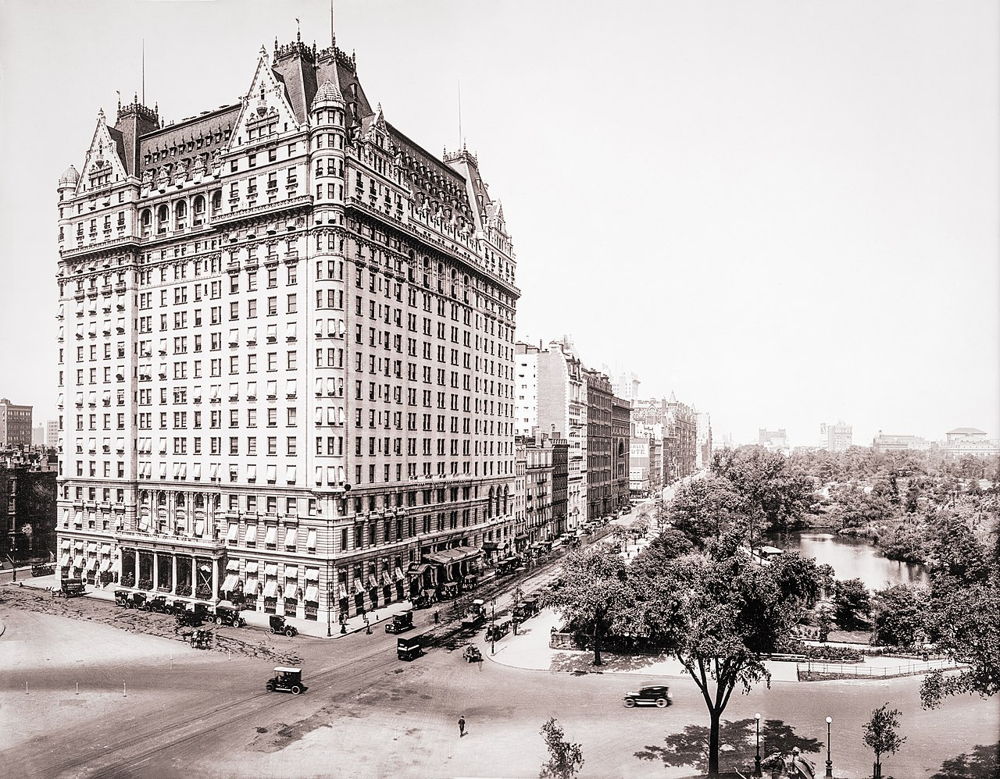
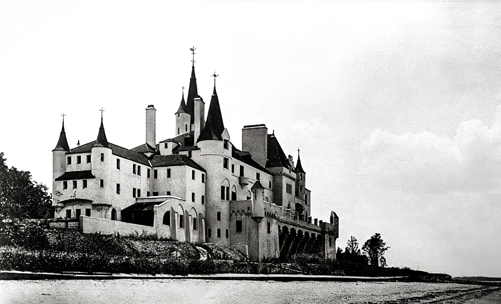
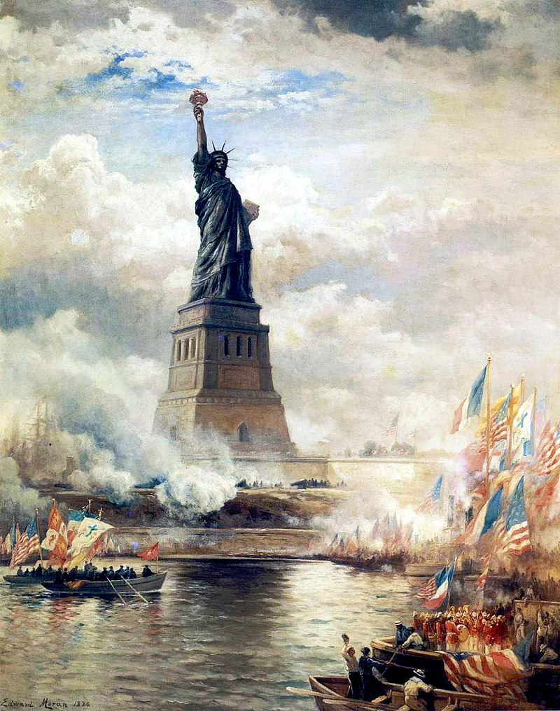
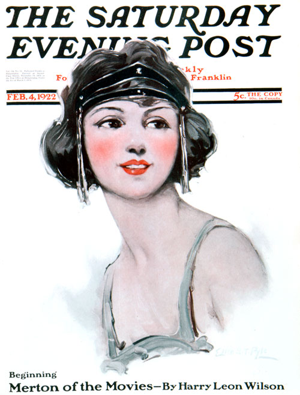
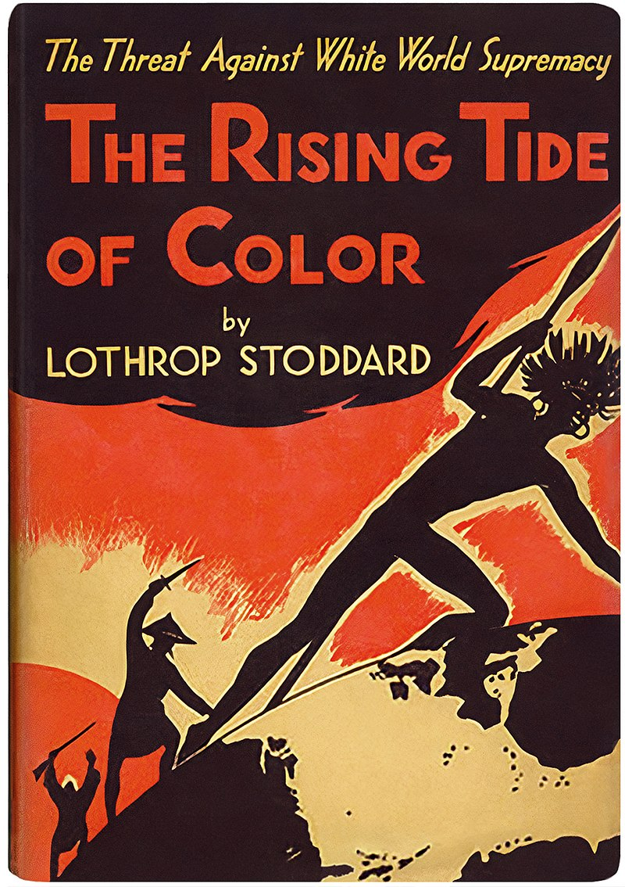

The Great Gatsby

- Author: F. Scott Fitzgerald
- Language: English
- Subject: Literary
- Publisher: Charles Scribner's Sons
- Publication date: April 10, 1925
- Publication place: United States
- Media type: Print (hardcover & paperback)
- Pages: 180-200
George Wilson and his wife Myrtle live in the "valley of ashes", a refuse dump (shown in the above photograph) historically located in New York City during the 1920s. Today, the area is Flushing Meadows–Corona Park.
The confrontation between Gatsby and Tom occurs in the twenty-story Plaza Hotel, a château-like edifice with an architectural style inspired by the French Renaissance.
The now-demolished Beacon Towers partly served as an inspiration for Gatsby's home.
Oheka Castle was another North Shore inspiration for the novel's setting.
The American Dream, often represented by the Statue of Liberty signifying new opportunities in life, is a central theme underlying the novel.
An idealized depiction of a flapper as illustrated by Ellen Pyle for the cover of The Saturday Evening Post (1922)
Fitzgerald's novel references a fictional book, Goddard's The Rise of the Colored Empires, which is a parody of The Rising Tide of Color (1920) by Lothrop Stoddard.
The Great Gatsby is a 1925 novel by American writer F. Scott Fitzgerald. Set in the Jazz Age on Long Island, near New York City, the novel depicts first-person narrator Nick Carraway's interactions with Jay Gatsby, the mysterious millionaire with an obsession to reunite with his former lover, Daisy Buchanan.
The novel was inspired by a youthful romance Fitzgerald had with socialite Ginevra King, and the riotous parties he attended on Long Island's North Shore in 1922. Following a move to the French Riviera, Fitzgerald completed a rough draft of the novel in 1924. He submitted it to editor Maxwell Perkins, who persuaded Fitzgerald to revise the work over the following winter. After making revisions, Fitzgerald was satisfied with the text, but remained ambivalent about the book's title and considered several alternatives. Painter Francis Cugat's dust jacket art, named Celestial Eyes, greatly impressed Fitzgerald, and he incorporated its imagery into the novel.
After its publication by Scribner's in April 1925, The Great Gatsby received generally favorable reviews, though some literary critics believed it did not equal Fitzgerald's previous efforts. Compared to his earlier novels, This Side of Paradise (1920) and The Beautiful and Damned (1922), the novel was a commercial disappointment. It sold fewer than 20,000 copies by October, and Fitzgerald's hopes of a monetary windfall from the novel were unrealized. When the author died in 1940, he believed himself to be a failure and his work forgotten.
During World War II, the novel experienced an abrupt surge in popularity when the Council on Books in Wartime distributed free copies to American soldiers serving overseas. This new-found popularity launched a critical and scholarly re-examination, and the work soon became a core part of most American high school curricula and a part of American popular culture. Numerous stage and film adaptations followed in the subsequent decades.
Gatsby continues to attract popular and scholarly attention. Scholars emphasize the novel's treatment of social class, inherited versus self-made wealth, gender, race, and environmentalism, and its cynical attitude towards the American Dream. The Great Gatsby is widely considered to be a literary masterpiece and a contender for the title of the Great American Novel.
Historical and biographical context
Set on the prosperous Long Island of 1922, The Great Gatsby provides a critical social history of Prohibition-era America during the Jazz Age.[a] F. Scott Fitzgerald's fictional narrative fully renders that period—known for its jazz music,[2] economic prosperity,[3] flapper culture,[4] libertine mores,[3] rebellious youth,[5] and ubiquitous speakeasies. Fitzgerald uses many of these 1920s societal developments to tell his story, from simple details like petting in automobiles to broader themes such as bootlegging as the illicit source of Gatsby's fortune.[6][7]
Fitzgerald conveys the hedonism of Jazz Age society by following a down-to-earth narrator as a spectator of the most raucous and flashiest era in American history.[3][8] In Fitzgerald's eyes, the era represented a morally permissive time when Americans of all ages became disillusioned with prevailing social norms and obsessed with pleasure-seeking.[9] Fitzgerald himself had a certain ambivalence towards the Jazz Age, an era whose themes he would later regard as reflective of events in his own life.[10]
The Great Gatsby reflects various events in Fitzgerald's youth.[11] He was a young Midwesterner from Minnesota. Like the novel's narrator who went to Yale, he was educated at an Ivy League school, Princeton.[12] There the 18-year-old Fitzgerald met Ginevra King, a 16-year-old socialite with whom he fell deeply in love.[13][14] Although Ginevra was madly in love with him,[15] her upper-class family openly discouraged his courtship of their daughter because of his lower-class status, and her father purportedly told him that "poor boys shouldn't think of marrying rich girls".[16]
Rejected by Ginevra's family as a suitor because of his lack of financial prospects, a suicidal Fitzgerald enlisted in the United States Army amid World War I and was commissioned as a second lieutenant.[17][18] While awaiting deployment to the Western front where he hoped to die in combat,[18] he was stationed at Camp Sheridan in Montgomery, Alabama, where he met Zelda Sayre, a vivacious 17-year-old Southern belle.[19] After learning that Ginevra had married wealthy Chicago businessman William "Bill" Mitchell, Fitzgerald asked Zelda to marry him.[20] Zelda agreed but postponed their marriage until he became financially successful.[21][22] Fitzgerald is thus similar to Jay Gatsby in that he became engaged while a military officer stationed far from home and then sought immense wealth in order to provide for the lifestyle to which his fiancée had become accustomed.[b][26][27]
After his success as a short-story writer and as a novelist, Fitzgerald married Zelda in New York City, and the newly-wed couple soon relocated to Long Island.[28] Despite enjoying the exclusive Long Island milieu, Fitzgerald quietly disapproved of the extravagant parties,[29] and the wealthy persons he encountered often disappointed him.[30] While striving to emulate the rich, he found their privileged lifestyle to be morally disquieting.[31][32] Although Fitzgerald—like Gatsby—had always admired the rich, he nonetheless possessed a smoldering resentment towards them.[32]
Plot summary
In spring 1922, Nick Carraway—a Yale alumnus from the Midwest and a World War I veteran—journeys to New York City to obtain employment as a bond salesman. He rents a bungalow in the Long Island village of West Egg, next to a luxurious estate inhabited by Jay Gatsby, an enigmatic multi-millionaire who hosts dazzling soirées yet does not partake in them.
One evening, Nick dines with a distant cousin, Daisy Buchanan, in the old money town of East Egg. Daisy is married to Tom Buchanan, formerly a Yale football star whom Nick knew during his college days. The couple has recently relocated from Chicago to a mansion directly across the bay from Gatsby's estate. There, Nick encounters Jordan Baker, an insolent flapper and golf champion who is a childhood friend of Daisy's. Jordan confides to Nick that Tom keeps a mistress, Myrtle Wilson, who brazenly telephones him at his home and who lives in the "valley of ashes", a sprawling refuse dump.[33] That evening, Nick sees Gatsby standing alone on his lawn, staring at a green light across the bay.
Days later, Nick reluctantly accompanies a drunken and agitated Tom to New York City by train. En route, they stop at a garage inhabited by mechanic George Wilson and his wife Myrtle. Myrtle joins them, and the trio proceed to a small New York apartment that Tom has rented for trysts with her. Guests arrive and a party ensues, which ends with Tom slapping Myrtle and breaking her nose after she mentions Daisy.
One morning, Nick receives a formal invitation to a party at Gatsby's mansion. Once there, Nick is embarrassed that he recognizes no one and begins drinking heavily until he encounters Jordan. While chatting with her, he is approached by a man who introduces himself as Jay Gatsby and insists that both he and Nick served in the 3rd Infantry Division[c] during the war. Gatsby attempts to ingratiate himself with Nick and when Nick leaves the party, he notices Gatsby watching him.
In late July, Nick and Gatsby have lunch at a speakeasy. Gatsby tries impressing Nick with tales of his war heroism and his Oxford days. Afterward, Nick meets Jordan again at the Plaza Hotel. Jordan reveals that Gatsby and Daisy met around 1917 when Gatsby was an officer in the American Expeditionary Forces. They fell in love, but when Gatsby was deployed overseas, Daisy reluctantly married Tom. Gatsby hopes that his newfound wealth and dazzling parties will make Daisy reconsider. Gatsby uses Nick to stage a reunion with Daisy, and the two embark upon an affair.
In September, Tom discovers the affair when Daisy carelessly addresses Gatsby with unabashed intimacy in front of him. Later, at a Plaza Hotel suite, Gatsby and Tom argue about the affair. Gatsby insists Daisy declare that she never loved Tom. Daisy claims she loves Tom and Gatsby, upsetting both. Tom reveals Gatsby is a swindler whose money comes from bootlegging alcohol. Upon hearing this, Daisy chooses to stay with Tom. Tom scornfully tells Gatsby to drive her home, knowing that Daisy will never leave him.
While returning to East Egg, Gatsby and Daisy drive by Wilson's garage and their car strikes Myrtle, killing her instantly. Later Gatsby reveals to Nick that Daisy was driving the car, but that he intends to take the blame for the accident to protect her. Nick urges Gatsby to flee to avoid prosecution, but he refuses. After Tom tells George that Gatsby owns the car that struck Myrtle, a distraught George assumes the owner of the vehicle must be Myrtle's lover. George fatally shoots Gatsby in his mansion's swimming pool, then kills himself.
Several days after Gatsby's murder, his father Henry Gatz arrives for the sparsely attended funeral. After Gatsby's death, Nick comes to hate New York and decides that Gatsby, Daisy, Tom, and he were all Midwesterners unsuited to Eastern life.[d] Nick encounters Tom and initially refuses to shake his hand. Tom admits he was the one who told George that Gatsby owned the vehicle that killed Myrtle. Before returning to the Midwest, Nick returns to Gatsby's mansion and stares across the bay at the green light emanating from the end of Daisy's dock.
Major characters
Nick Carraway – a Yale University alumnus from the Midwest, a World War I veteran, and a newly arrived resident of West Egg, age 29 (later 30) who serves as the first-person narrator. He is Gatsby's neighbor and a bond salesman. Nick is easy-going and optimistic, although this latter quality fades as the novel progresses. He ultimately returns to the Midwest after despairing of the decadence and indifference of the eastern United States.[35]
Jay Gatsby (originally James "Jimmy" Gatz) – a young, mysterious millionaire with shady business connections (later revealed to be a bootlegger), originally from North Dakota. During World War I, when he was a young military officer stationed at the United States Army's Camp Taylor in Louisville, Kentucky, Gatsby encountered the love of his life, the debutante Daisy Buchanan. Later, after the war, he studied briefly at Trinity College, Oxford, in England.[36] According to Fitzgerald's wife Zelda, he partly based Gatsby on their enigmatic Long Island neighbor, Max Gerlach.[37] A military veteran, Gerlach became a self-made millionaire due to his bootlegging endeavors and was fond of using the phrase "old sport" in his letters to Fitzgerald.[38]
Daisy Buchanan – a shallow, self-absorbed, and young debutante and socialite from Louisville, Kentucky, identified as a flapper.[39] She is Nick's second cousin, once removed, and the wife of Tom Buchanan. Before marrying Tom, Daisy had a romantic relationship with Gatsby. Her choice between Gatsby and Tom is one of the novel's central conflicts. Fitzgerald's romance and life-long obsession with Ginevra King inspired the character of Daisy.[13][40][41]
Thomas "Tom" Buchanan – Daisy's husband, a millionaire who lives in East Egg. Tom is an imposing man of muscular build with a gruff voice and contemptuous demeanor.[42] He was a football star at Yale and is a white supremacist.[43] Among other literary models,[e] Tom has certain parallels with William "Bill" Mitchell, the Chicago businessman who married Ginevra King.[45] Tom and Mitchell were both Chicagoans with an interest in polo.[45] Also, like Ginevra's father Charles King, whom Fitzgerald resented, Tom is an imperious Yale man and polo player from Lake Forest, Illinois.[46]
Jordan Baker – an amateur golfer with a sarcastic streak and an aloof attitude, and Daisy's long-time friend. She is Nick Carraway's girlfriend for most of the novel, though they grow apart towards the end. She has a shady reputation because of rumors that she had cheated in a tournament, which harmed her reputation both socially and as a golfer. Fitzgerald based Jordan on Ginevra's friend Edith Cummings,[47] a premier amateur golfer known in the press as "The Fairway Flapper".[48] Unlike Jordan Baker, Cummings was never suspected of cheating.[49] The character's name is a play on two popular automobile brands, the Jordan Motor Car Company and the Baker Motor Vehicle, both of Cleveland, Ohio,[50] alluding to Jordan's "fast" reputation and the new freedom presented to American women, especially flappers, in the 1920s.[51][52][53]
George B. Wilson – a mechanic and owner of a garage. He is disliked by both his wife, Myrtle Wilson, and Tom Buchanan, who describes him as "so dumb he doesn't know he's alive".[54] At the end of the novel, George shoots Gatsby dead, wrongly believing he had been driving the car that killed Myrtle, and then kills himself.[55]
Myrtle Wilson – George's wife and Tom Buchanan's mistress. Myrtle, who possesses a fierce vitality,[56] is desperate to find refuge from her disappointing marriage.[57] She is accidentally killed by Gatsby's car, as she mistakenly thinks Tom is still driving it and runs after it.[58]
Writing and production
Fitzgerald began outlining his third novel in June 1922.[7] He longed to produce an exquisite work that was beautiful and intricately patterned,[59] but the troubled production of his stage play The Vegetable repeatedly interrupted his progress.[60] The play flopped, and Fitzgerald wrote magazine stories that winter to pay debts incurred by its production.[61] He viewed these stories as all worthless,[60] although included among them was "Winter Dreams", which Fitzgerald described as his first attempt at the Gatsby idea.[62] "The whole idea of Gatsby", he later explained to a friend, "is the unfairness of a poor young man not being able to marry a girl with money. This theme comes up again and again because I lived it".[63]
In October 1922, after the birth of their only child, Frances Scott "Scottie" Fitzgerald, the Fitzgeralds moved to Great Neck, New York, on Long Island.[64] Their neighbors in Great Neck included such newly wealthy personages as writer Ring Lardner, actor Lew Fields and comedian Ed Wynn.[7] These figures were all considered to be nouveau riche, unlike those who came from Manhasset Neck, which sat across the bay from Great Neck—places that were home to many of New York's wealthiest established families.[65] This real-life juxtaposition gave Fitzgerald his idea for "West Egg" and "East Egg". In the novel, Great Neck (Kings Point) became the "new money" peninsula of West Egg and Port Washington (Sands Point) became the "old money" East Egg.[65] Several Gold Coast mansions in the area served as inspiration for Gatsby's estate including Land's End,[66] Oheka Castle,[67] and the since-demolished Beacon Towers.[68]
While living on Long Island, the Fitzgeralds' enigmatic neighbor was Max Gerlach.[f][37][72] Purportedly born in America to a German immigrant family,[g] Gerlach had been a major in the American Expeditionary Forces during World War I, and he later became a gentleman bootlegger who lived like a millionaire in New York.[74] Flaunting his new wealth,[h] Gerlach threw lavish parties,[76] never wore the same shirt twice,[77] used the phrase "old sport",[78] and fostered myths about himself including that he was a relation of the German Kaiser.[79] These details about Gerlach inspired Fitzgerald in his creation of Jay Gatsby.[80]
During this same time period, the daily newspapers sensationalized the Hall–Mills murder case over many months, and the highly publicized case likely influenced the plot of Fitzgerald's novel.[81] The case involved the double-murder of a man and his lover on September 14, 1922, mere weeks before Fitzgerald arrived in Great Neck. Scholars have speculated that Fitzgerald based certain aspects of the ending of The Great Gatsby and various characterizations on this factual incident.[82]
Inspired by the Halls–Mills case, the mysterious persona of Gerlach and the riotous parties he attended on Long Island, Fitzgerald had written 18,000 words for his novel by mid-1923 but discarded most of his new story as a false start.[83] Some of this early draft resurfaced in the 1924 short story "Absolution".[84] In earlier drafts,[i] Daisy was originally named Ada and Nick was Dud,[86] and the two characters had shared a previous romance prior to their reunion on Long Island.[87] These earlier drafts were written from the viewpoint of an omniscient narrator as opposed to Nick's perspective.[88] A key difference in earlier drafts is a less complete failure of Gatsby's dream.[89] Another difference is that the argument between Tom Buchanan and Gatsby is more balanced, although Daisy still returns to Tom.[89]
Work on The Great Gatsby resumed in earnest in April 1924.[90] Fitzgerald decided to depart from the writing process of his previous novels and told Perkins that he was intent on creating an artistic achievement.[91] He wished to eschew the realism of his previous two novels and to compose a creative work of sustained imagination.[92] To this end, he consciously imitated the literary styles of Joseph Conrad and Willa Cather.[93] He was particularly influenced by Cather's 1923 work, A Lost Lady,[94] which features a wealthy married socialite pursued by a variety of romantic suitors and who symbolically embodies the American dream.[95][96] He later wrote a letter to Cather apologizing for any unintentional plagiarism.[94] During this period of revisions, Scott saw and was influenced by early sketches for the book's dust jacket art.[97][98] Soon after this burst of effort, work slowed while the Fitzgeralds moved to the Villa Marie in Saint-Raphaël on the French Riviera, where a marital crisis soon developed.[j]
Despite his ongoing marital tension, Fitzgerald continued to write steadily and submitted a near-final version of the manuscript to his editor, Maxwell Perkins, on October 27.[100] Perkins informed him in a November letter that Gatsby was too vague as a character and that his wealth and business, respectively, needed a convincing explanation.[101] Fitzgerald thanked Perkins for his detailed criticisms and claimed that such feedback would enable him to perfect the manuscript.[102] Having relocated with his wife to Rome,[103] Fitzgerald made revisions to the manuscript throughout the winter.[101]
Content after a few rounds of revision, Fitzgerald submitted the final version in February 1925.[104] Fitzgerald's alterations included extensive revisions of the sixth and eighth chapters.[105] He declined an offer of $10,000 for the serial rights to the book so that it could be published sooner.[106] He received a $3,939 advance in 1923 and would receive $1,981.25 upon publication.[107]
Alternative titles
Fitzgerald had difficulty choosing a title for his novel and entertained many choices before reluctantly deciding on The Great Gatsby,[108] a title inspired by Alain-Fournier's Le Grand Meaulnes.[109] Previously he had shifted between Among Ash Heaps and Millionaires,[108] Trimalchio,[108] Trimalchio in West Egg,[110] On the Road to West Egg,[110] Under the Red, White, and Blue,[108] The Gold-Hatted Gatsby,[110] and The High-Bouncing Lover.[110] The titles The Gold-Hatted Gatsby and The High-Bouncing Lover came from Fitzgerald's epigraph for the novel, one which he wrote himself under the pen name of Thomas Parke D'Invilliers.[111]
Fitzgerald initially preferred titles referencing Trimalchio,[k] the crude upstart in Petronius's Satyricon, and even refers to Gatsby as Trimalchio once in the novel.[113] Unlike Gatsby's spectacular parties, Trimalchio participated in the orgies he hosted but, according to literary critic Tony Tanner, there are subtle similarities between the two characters.[114] By November 1924, Fitzgerald wrote to Perkins that he had settled upon the title of Trimalchio in West Egg.[115]
Disliking Fitzgerald's chosen title of Trimalchio in West Egg, editor Max Perkins persuaded him that the reference was too obscure and that people would be unable to pronounce it.[116] Zelda and Perkins both expressed their preference for The Great Gatsby, and the next month Fitzgerald agreed.[117] A month before publication, after a final review of the proofs, he asked if it would be possible to re-title it Trimalchio or Gold-Hatted Gatsby, but Perkins advised against it. On March 19, 1925,[118] Fitzgerald expressed enthusiasm for the title Under the Red, White, and Blue, but it was too late to change it at that stage.[119][120] The novel was published as The Great Gatsby on April 10, 1925.[121] Fitzgerald believed the book's final title to be merely acceptable and often expressed his ambivalence with the name.[122]
The American Dream
Following the novel's revival, later critical writings on The Great Gatsby focused on Fitzgerald's disillusionment with the American Dream in the hedonistic Jazz Age,[180] a name for the era which Fitzgerald claimed to have coined.[181] In 1970, scholar Roger L. Pearson asserted that Fitzgerald's work—more so than other twentieth century novels—is especially linked with this conceptualization of the American dream.[182] Pearson traced the literary origins of this dream to Colonial America. The dream is the belief that every individual, regardless of their origins, may seek and achieve their desired goals, "be they political, monetary, or social. It is the literary expression of the concept of America: The land of opportunity".[182]
Although scholars posit different explanations for the continuation of class differences in the United States, there is a consensus regarding the novel's message in conveying its underlying permanence.[187] Although Gatsby's fundamental conflict occurs between entrenched sources of socio-economic power and upstarts like Gatsby who threaten their interests,[188] Fitzgerald's novel shows that a class permanence persists despite the country's capitalist economy that prizes innovation and adaptability.[188] Dianne Bechtel argues Fitzgerald plotted the novel to illustrate that class transcends wealth in America. Even if the poorer Americans become rich, they remain inferior to those Americans with "old money".[189] Consequently, Gatsby and other characters in the novel are trapped in a rigid American class system.[190]
Gender relations
Besides exploring the difficulties of achieving the American dream, The Great Gatsby explores societal gender expectations during the Jazz Age.[191] The character of Daisy Buchanan has been identified specifically as personifying the emerging cultural archetype of the flapper.[39] Flappers were typically young, modern women who bobbed their hair and wore short skirts.[192][193] They also drank alcohol and had premarital sex.[194][6]
Despite the newfound societal freedoms attained by flappers in the 1920s,[195] Fitzgerald's work critically examines the continued limitations upon women's agency during this period.[196] In this context, although early critics viewed the character of Daisy to be a "monster of bitchery",[197] later scholars such as Leland S. Person Jr. asserted that Daisy's character exemplifies the marginalization of women in the elite social environment that Fitzgerald depicts.[198]
Writing in 1978, Person noted Daisy is more of a hapless victim than a manipulative victimizer.[199] She is the target first of Tom's callous domination and next of Gatsby's dehumanizing adoration.[199] She involuntarily becomes the holy grail at the center of Gatsby's unrealistic quest to be steadfast to a youthful concept of himself.[199] The ensuing contest of wills between Tom and Gatsby reduces Daisy to a trophy wife whose sole existence is to augment her possessor's socio-economic success.[20
As an upper-class white woman living in East Egg during this time period, Daisy must adhere to societal expectations and gender norms such as actively fulfilling the roles of dutiful wife, nurturing mother, and charming socialite.[196] Many of Daisy's choices—ultimately culminating in the fatal car crash and misery for all those involved—can be partly attributed to her prescribed role as a "beautiful little fool" who is reliant on her husband for financial and societal security.[m][202] Her decision to remain with her husband, despite her feelings for Gatsby, is because of the security that her marriage to Tom Buchanan provides.[197]
Race and displacement
Many scholars have analyzed the novel's treatment of race and displacement; in particular, a perceived threat posed by newer immigrants to older Americans, triggering concerns over a loss of socio-economic status.[203] In one instance, Tom Buchanan—the novel's antagonist—claims that he, Nick, and Jordan are racially superior Nordics. Tom decries immigration and advocates white supremacy.[204] A fictional book alluded to by Tom is Goddard's The Rise of the Colored Empires, which is a parody by Fitzgerald of Lothrop Stoddard's The Rising Tide of Color, a 1920s bestseller.[205] Stoddard warned that immigration would alter America's racial composition and destroy the country.[206]
Analyzing these elements, literary theorist Walter Benn Michaels contends that Fitzgerald's novel reflects a historical period in American literature characterized by fears over the influx of Southern and Eastern European immigrants whose "otherness" challenged Americans' sense of national identity.[207] Such anxieties were more salient in national discourse than the societal consequences of World War I,[208][209] and the defining question of the period was who constituted "a real American".[210]
In this context of immigration and displacement, Tom's hostility towards Gatsby, who is the embodiment of "latest America",[211] has been interpreted as partly embodying status anxieties of the time involving anti-immigrant sentiment.[211] Gatsby—whom Tom belittles as "Mr. Nobody from Nowhere"[212]—functions as a cipher because of his obscure origins, his unclear ethno-religious identity and his indeterminate class status.[213] Although his ethnicity is vague, his last name Gatz and his father's adherence to the Lutheran religion indicate his family are recent German immigrants.[214] This would preclude them from the coveted status of Old Stock Americans.[214] Consequently, Gatsby's socio-economic ascent is deemed a threat not only due to his status as nouveau riche, but because he is perceived as an outsider.[215]
Because of such themes, The Great Gatsby captures the perennial American experience as it is a story about change and those who resist it—whether such change comes in the form of a new wave of immigrants, the nouveau riche, or successful minorities.[188] Since Americans living in the 1920s to the present are largely defined by their fluctuating socio-economic circumstances and must navigate a society with entrenched racial and ethnic prejudices, Fitzgerald's depiction of resultant status anxieties and social conflict has been highlighted by scholars as still enduringly relevant nearly a hundred years after the novel's publication.[188][216]